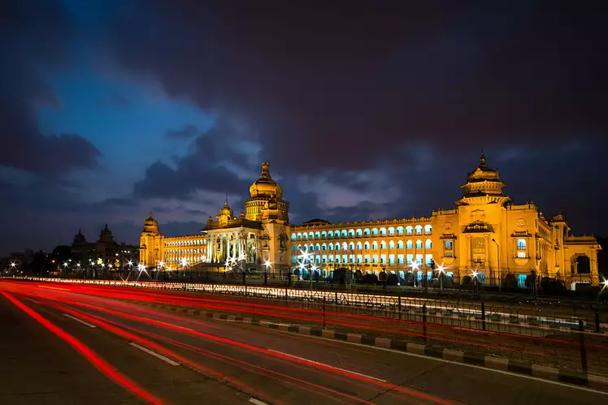

Bangalore,India !

1. Why is Bangalore a Favourite city?
Bangalore is famous for being the Silicon Valley of India. This capital city of Karnataka is a renowned IT hub and is home to some of the world's major IT corporations which operate out of the city. Moreover, Bangalore is also the hub to many start-ups and Indian tech companies.
2.Why do u like Bangalore?
We simply love our home town! And, there is one city in India which makes every visitor, student and traveler fall in love with the place. Bangalore absorbs people into it. Some vouch for its weather, some love the greenery around and others need no reason to love the city.